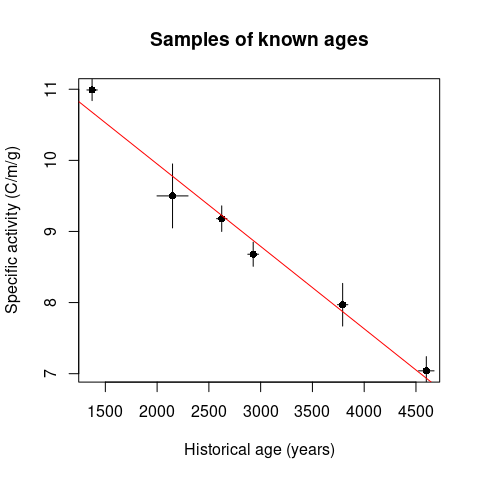

Datasets for teaching quantitative approaches and modeling in archaeology and paleontology. This package provides several types of data related to broad topics (cultural evolution, radiocarbon dating, paleoenvironments, etc.), which can be used to illustrate statistical methods in the classroom (multivariate data analysis, compositional data analysis, diversity measurement, etc.).
This package is for teaching purposes only: some datasets may be outdated.
When using folio, you must cite the relevant publications for each dataset (see the documentation).
Installation
You can install the released version of folio from CRAN with:
install.packages("folio")And the development version from GitHub with:
# install.packages("remotes")
remotes::install_github("tesselle/folio")Usage
## Arnold and Libby's Curve of Knowns
## Replicate fig. 1 from Arnold and Libby (1949)
data("arnold1949")
fit <- lm(activity_found ~ age_expected, data = arnold1949)
summary(fit)
#>
#> Call:
#> lm(formula = activity_found ~ age_expected, data = arnold1949)
#>
#> Residuals:
#> 1 2 3 4 5 6
#> 0.31341 -0.27618 -0.04573 -0.19344 0.09780 0.10414
#>
#> Coefficients:
#> Estimate Std. Error t value Pr(>|t|)
#> (Intercept) 12.2665215 0.2903726 42.24 1.88e-06 ***
#> age_expected -0.0011588 0.0000938 -12.35 0.000247 ***
#> ---
#> Signif. codes: 0 '***' 0.001 '**' 0.01 '*' 0.05 '.' 0.1 ' ' 1
#>
#> Residual standard error: 0.2421 on 4 degrees of freedom
#> Multiple R-squared: 0.9745, Adjusted R-squared: 0.9681
#> F-statistic: 152.6 on 1 and 4 DF, p-value: 0.0002467
plot(
x = arnold1949$age_expected,
y = arnold1949$activity_found,
type = "p",
pch = 16,
xlab = "Historical age (years)",
ylab = "Specific activity (C/m/g)",
main = "Samples of known ages"
)
segments(
x0 = arnold1949$age_expected,
y0 = arnold1949$activity_found - arnold1949$activity_found_error,
x1 = arnold1949$age_expected,
y1 = arnold1949$activity_found + arnold1949$activity_found_error
)
segments(
x0 = arnold1949$age_expected - arnold1949$age_expected_error,
y0 = arnold1949$activity_found,
x1 = arnold1949$age_expected + arnold1949$age_expected_error,
y1 = arnold1949$activity_found
)
abline(fit, col = "red")
Contributing
Please note that the folio project is released with a Contributor Code of Conduct. By contributing to this project, you agree to abide by its terms.